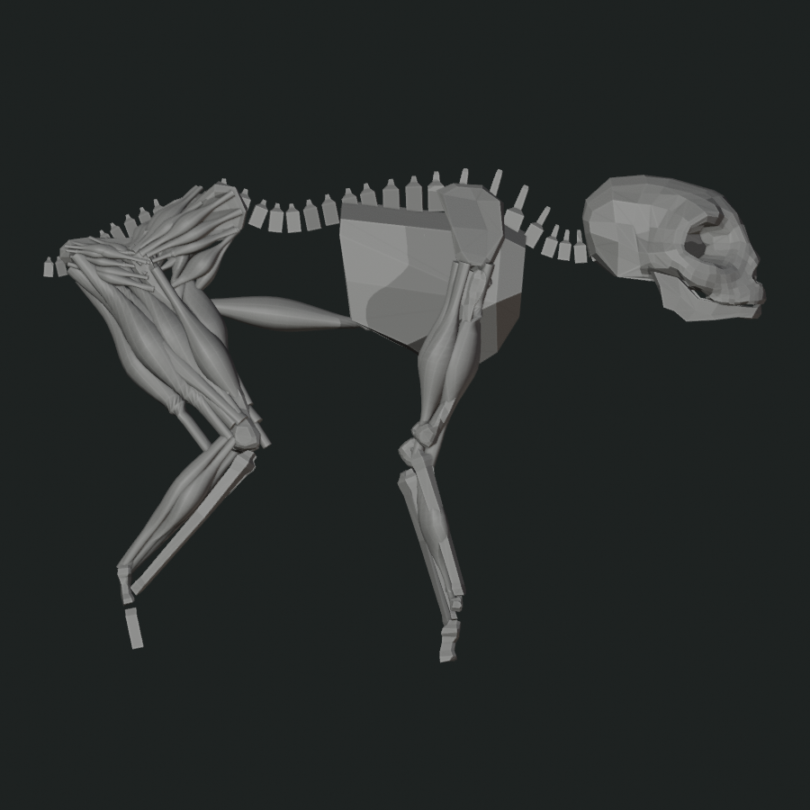
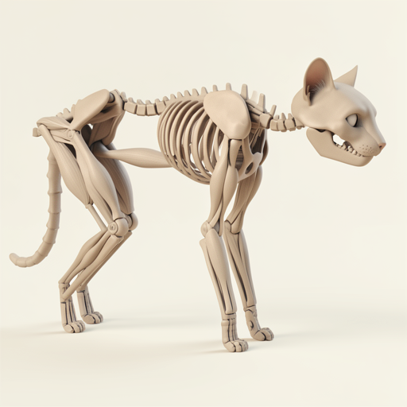

Input: Ecorche Role Palette

- Input SHA
- 43e7f5038c6a3f56f7da4e9741336636dc75ce54c276a58622eab17384b8896f
- Admission
- 112 surfaces: 55 authored meshes, 57 muscle surfaces
- Recovered
- 18 source-bound anatomical meshes
Palette controls inferred anatomical role; uniform white does not independently induce skin completion.
Historical correction: the earlier Flux input omitted long limb bones. The old panel labeled front-three-quarter was not supplied to Flux. These rows use repaired complete geometry from commit a6056702.
Complete the supplied operator-authored anatomy into one coherent living cat. Preserve the visible proportions, joint locations and organization, pelvis and folded hind-limb event, long muscle trajectories, rear support spacing, axial organization, support count, and direction of travel. Add only the missing connective anatomy and continuous outer surface needed to make the existing structure biologically complete. Do not normalize or replace the source's major mass relationships, limb lengths, joint chain, or stance. Three-quarter neutral studio creature render on a clean pale background. Keep the body continuous and clean, with no exposed anatomy, wounds, clustered apertures, repeated holes, extra limbs, duplicate body, text, interface, or logo.

Flux repairs feet, head, stance, and local cat anatomy while preserving exposed muscle and bone roles. It does not synthesize continuous outer skin.

Complete the supplied operator-authored anatomy into one coherent living cat. Preserve the visible proportions, joint locations and organization, pelvis and folded hind-limb event, long muscle trajectories, rear support spacing, axial organization, support count, and direction of travel. Add only the missing connective anatomy and continuous outer surface needed to make the existing structure biologically complete. Do not normalize or replace the source's major mass relationships, limb lengths, joint chain, or stance. Three-quarter neutral studio creature render on a clean pale background. Keep the body continuous and clean, with no exposed anatomy, wounds, clustered apertures, repeated holes, extra limbs, duplicate body, text, interface, or logo.

Flux adds ribs and reinterprets muscle-like carriers as bone-like anatomy. It remains externally incomplete rather than synthesizing continuous skin.